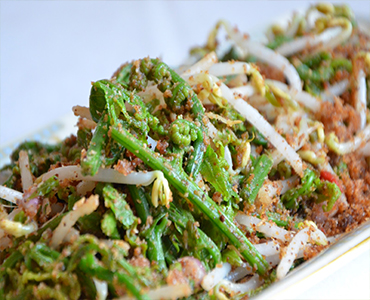

Bahan:
- 2 ikat pakis, siangi
- 1/4 btr kelapa yg muda, parut
- 1 bh jeruk limau
- 4 lmbr daun jeruk, buang tulangnya dan iris tipis
- Secukupnya garam
- Secukupnya minyak goreng
Bumbu Halus:
- 6 siung bawang merah
- 4 siung bawang putih
- 2 bh cabe merah besar
- 6 bh cabe kecil
- 1 ruas kencur
- 1/2 sdm gula merah
- 1/2 sdt terasi
Cara Membuat:
- Kukus kelapa parut agar tdk cpt basi, sisihkan dahulu
- Panaskan air, beri sedikit garam, bila sdh mendidih masukkan pakisnya,tiriskan dan sisihkan dulu
- Tumis bumbu halus lalu masukkan daun jeruk, beri secukupnya garam, aduk rata. Tumis bumbu hingga matang, test rasa.
- Siapkan wadah lalu masukkan sayur pakis, kelapa parut, bumbu, beri garam dan perasi jeruk limau, aduk rata urapnya. Sayur urap jgn diaduk semua, sebelum makan baru aduk
- Sajikan